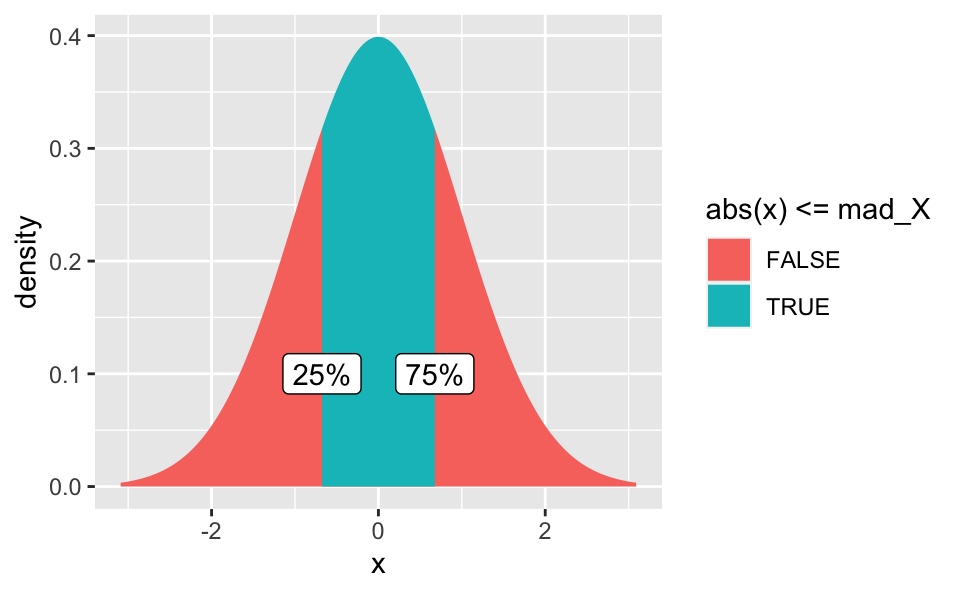
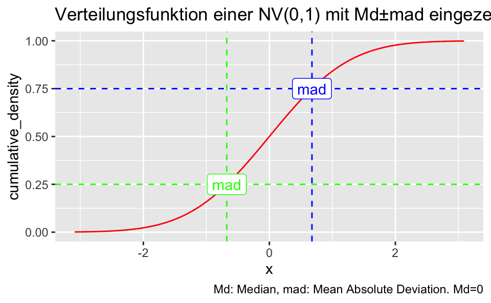

library(tidyverse)
library(mosaic)Der MAD oder Median Absolute Deviation ist eine robuste Kennzahl der Variabilität (eines quantitativen Merkmals).
Seien \(X_1, X_2, ..., X_n\) die Beobachtungen einer Stichprobe zu einem Merkmal \(X\).
Dann ist der MAD so definiert:
\(\text {MAD} =\operatorname{median} (|X_{i}-{\tilde {X}}|)\).
Anders gesagt, der MAD ist der Median der Absolutwerte der Residuen.
Robust heißt kurz (und vereinfacht) gesagt, dass der Kennwert nicht (zu sehr) von Extremwerten beeinflusst wird.
Man kann die MAD als Schätzwert für die SD verwenden (unter bestimmten Bedingungen). Das hat den Vorteil, dass man das Beste zweier Welten vereinen kann: Die Robustheit von MAD und die bekannten Quantile der SD, sofern man sich normalverteilte Variablen anschaut (oder sonstige wohlbekannte Verteilungen).
Dazu gilt folgende Formel:
\(\hat{\sigma} = k \cdot \text{MAD}\),
\(k\) ist ein Skalierungsfaktor, der von der zugrundegelegten Verteilung abhängt.
Bei normalverteilten Daten beträgt \(k\) etwa
\(k \approx 1.483\).
Rufen wir uns zunächst die Definition einer z-transformierten Variablen ins Gedächtnis:
\(Z = (X - \mu)/\sigma\).
Nach der Definition des Medians gilt, dass (approximativ) 50% der Beobachtungen größer (und daher auch 50% kleiner) als der Median sind.
Außerdem sind Mittelewert und Median identisch bei \(X \sim \mathbb{N}\) (einer normalverteilten Variablen, \(X\)).
MAD ist, wie oben geschrieben, nichts anderes als der Median der Abweichungen1 (vom Median und daher in diesem Fall auch vom Mittelwert).
Die Wahrscheinlichkeit einer Abweichung vom Mittelwert/Medien kleiner oder gleich dem MAD beträgt also 50%:
\({\displaystyle {\frac {1}{2}}=P(|X-\mu |\leq \operatorname {MAD} )}\)
Jetzt transformieren wir die Streuung auf 1; intuitiv gesprochen “stauchen” wir die X-Achse. Die Wahrscheinlichkeiten bzw. die Gleichung ändert sich dadurch nicht:
\({\displaystyle {\frac {1}{2}}=P(|X-\mu |\leq \operatorname {MAD} )=P\left(\left|{\frac {X-\mu }{\sigma }}\right|\leq {\frac {\operatorname {MAD} }{\sigma }}\right)}\)
Jetzt ersetzen wir \(Z = (X - \mu)/\sigma\):
\({\displaystyle {\frac {1}{2}}=P(|X-\mu |\leq \operatorname {MAD} )=P\left(\left|{\frac {X-\mu }{\sigma }}\right|\leq {\frac {\operatorname {MAD} }{\sigma }}\right)=P\left(|Z|\leq {\frac {\operatorname {MAD} }{\sigma }}\right).}\)
Da 50% der Beobachtungen (und damit der Wahrscheinlichkeitsmasse) innerhalb \((-MAD,+MAD)\) und aufgrund der Symmetrie der Normalverteilung gilt, dass 25% der Abweichungen größer (kleiner) als der Median (und damit auch der Mittelwert) sind.
Das hört sich alles so theoretisch an? Stimmt. Also probieren wir es aus: Simulieren wir uns mal ein paar Daten.
Wir ziehen viele (\(n=10^4\)) Werte für \(X \sim\mathbb{N}(0,1)\):
X <- rnorm(1e04)Dann berechnen wir den MAD:
mad <- function(vec, ...){
resid <- abs(vec - median(vec, ...))
mad <- median(resid, ...)
return(mad)
}Test der Funktion:
v <- c(10,20,30)
mad(v)## [1] 10Scheint zu passen.
mad_X <- mad(X)
mad_X## [1] 0.676244Wenn \(\mathbb{N}(0,1)\), dann
\(F(X=0.67) \approx 1/2\).
Anders gesagt: Sucht man das Quantil, das das obere Quartil abgrenzt, so muss man bei \(X=.67\) “abschneiden”.
Das visualisieren wir uns mal:
gf_dist("norm", fill = ~ abs(x) <= mad_X, geom = "area") +
annotate("label", x = mad_X, label = "75%", y = 0.1) +
annotate("label", x = -mad_X, label = "25%", y = 0.1) 
Wir behaupten nun also, innerhalb von \((-MAD,+MAD)\) liegen 50% der Werte.
within_abs_mad <- ifelse(abs(X) < mad_X, TRUE, FALSE)
sum(within_abs_mad)## [1] 5003Wie man sieht, liegen ca. 50% unserer simulierten Werte innerhalb des Bereichs \((-MAD,+MAD)\). Unsere Überlegung stimmt also offenbar.
Aufgrund der Symmetrie muss damit auch gelten, dass 25% der Werte (oder 50% der positiven Werte) größer sind +MAD (und symmetrisch für kleiner als Null).
Visualisieren wir noch die Verteilungsfunktion (CDF) \(\operatorname F(X)\):
gf_dist("norm", color ="red", kind = "cdf") +
geom_hline(yintercept = .75, color = "blue", linetype = "dashed") +
geom_vline(xintercept = +mad_X, color = "blue", linetype = "dashed") +
annotate("label", x = mad_X, label = "mad", y = .75, color = "blue") +
geom_hline(yintercept = .25, color = "green", linetype = "dashed") +
geom_vline(xintercept = -mad_X, color = "green", linetype = "dashed") +
annotate("label", x = -mad_X, label = "mad", y = .25, color = "green") +
labs(title = "Verteilungsfunktion einer NV(0,1) mit Md±mad eingezeichnet",
caption = "Md: Median, mad: Mean Absolute Deviation. Md=0")
Das heißt also, wenn wir mit \(F\) die Verteilungsfunktion (s. Diagramm) bezeichnen, dass, wenn \(\mathbb{N}(0,1)\), gilt
\(F(MAD/\sigma) = F(MAD) = .75 = 3/4\)
und
\(F(-MAD/\sigma) = F(-MAD) = .25 = 1/4\).
Man beachte, dass
\(F(-MAD) = 1 - F(MAD)\)
Also gilt
\(F(MAD/\sigma) - F(-MAD/\sigma) = 1/2\)
Löst man nun
\(F(MAD/\sigma) = = 3/4\)
nach \(F(MAD/\sigma)\) auf, so erhält man
\(\frac{MAD}{\sigma} = \operatorname F^{-1}(3/4) \approx 0.675\).
Folglich gilt
\(k = 1/\operatorname F^{-1}(3/4) \approx 1.483\).
Residuen↩︎